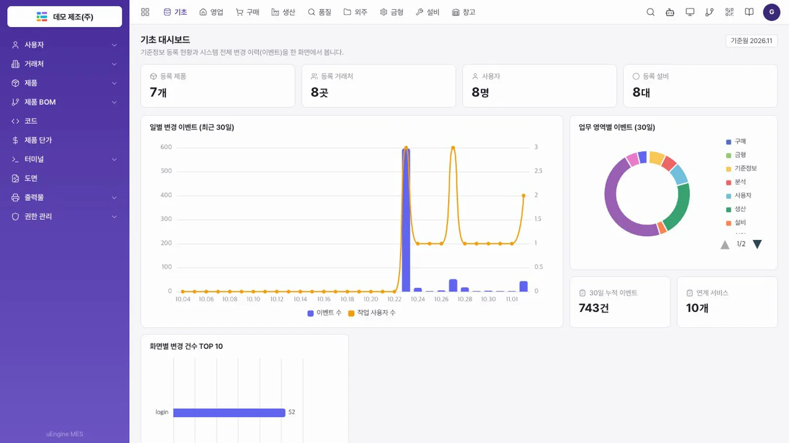
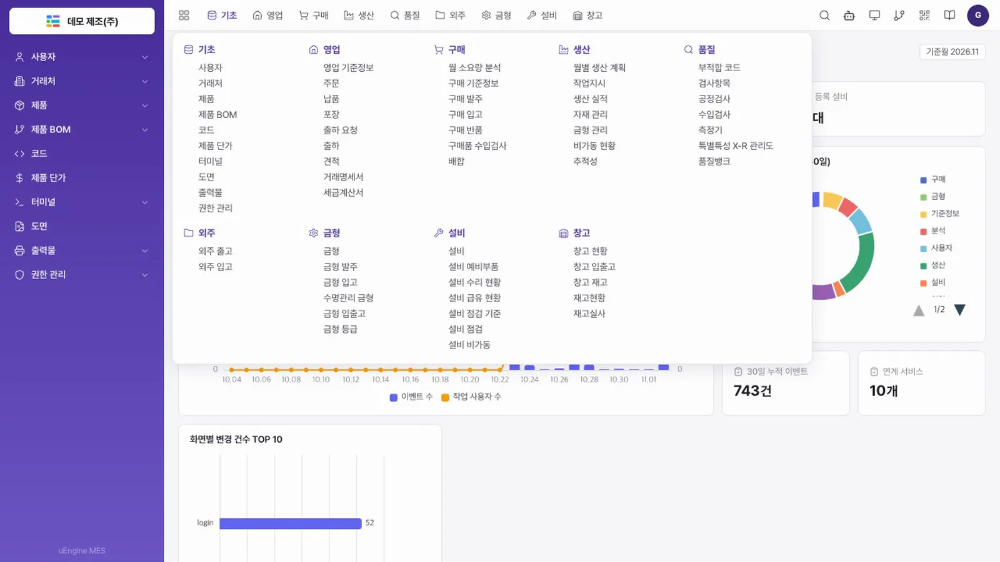
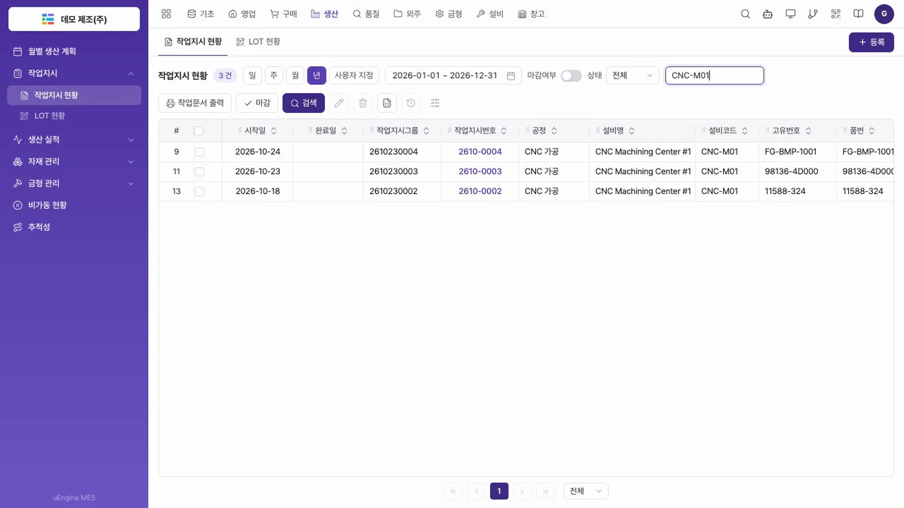
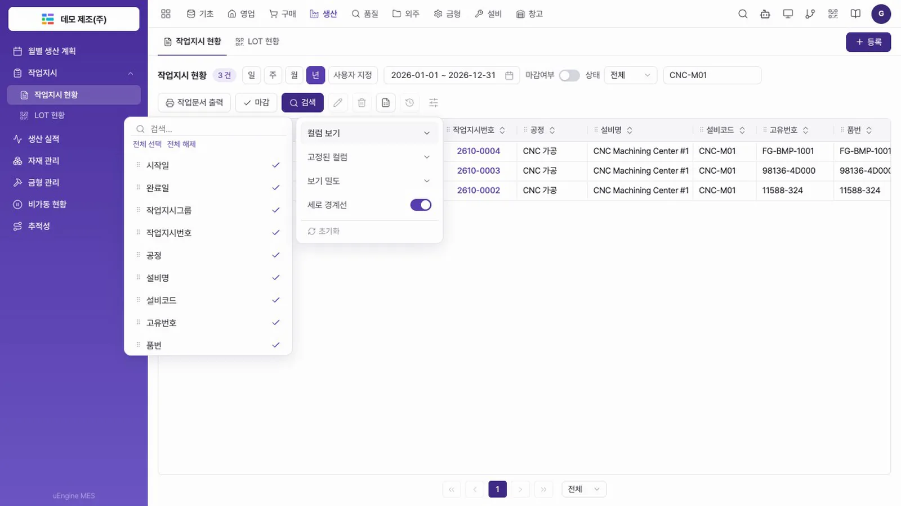
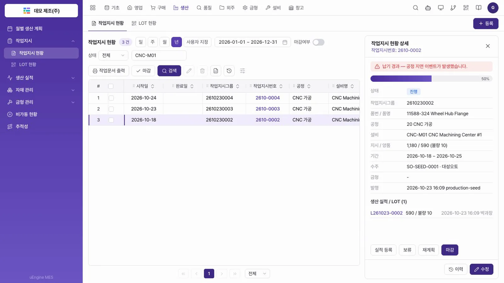
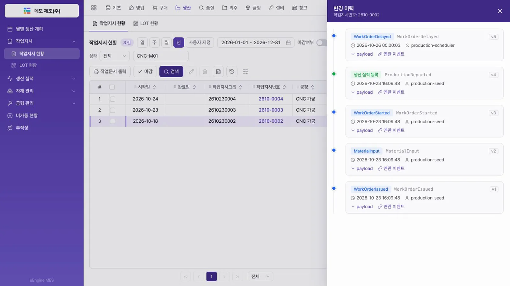
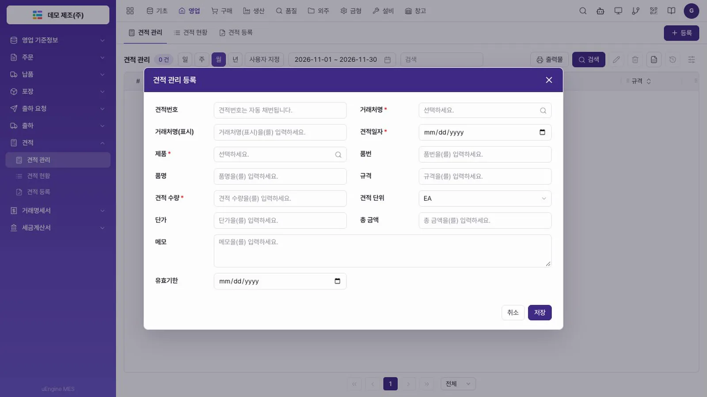
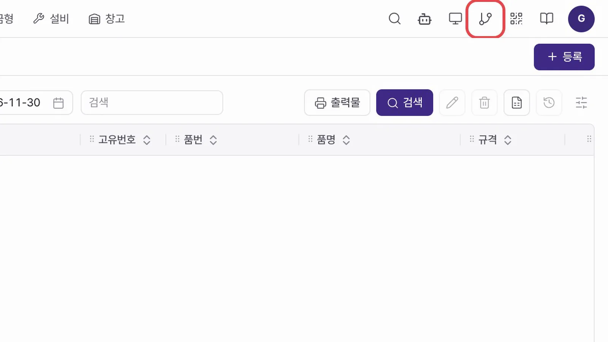

uEngine MES 가 무엇인지, 시연 환경은 어떻게 받는지 알아보고, 화면 구성과 메뉴, 그리드, 변경 이력을 직접 둘러봅니다.
무엇을 · 왜#
uEngine MES 는 모든 변경을 이벤트로 저장하는 이벤트 기반 MES 의 시연용 참조 구현입니다. 설비가 멈추면 영향 범위를 계산하고, 대응과 그 근거를 이벤트로 남기며, 그때 공장 상태를 다시 복원해 볼 수 있습니다. 나중에 온톨로지와 에이전트를 붙일 자리도 이 이벤트 위에 마련되어 있습니다.
먼저 알아 둘 것
- 소스는 공개하지 않습니다. 튜토리얼을 혼자 설치해 따라 할 수는 없습니다.
- 데이터는 모두 합성입니다. 회사, 거래처, 제품, 수주 이름과 값은 시연을 위해 만든 것입니다.
- 시연 환경은 요청하면 제공합니다. 문의하기로 요청하면 접속 주소와 계정을 안내해 드립니다. 튜토리얼은 그 환경에서 화면을 따라 하도록 쓰여 있습니다.
- 운영 실적이나 성능 수치를 제시하는 자료가 아닙니다.
| 구성 | 내용 |
|---|---|
| 서비스 | 바운디드 컨텍스트 10개(사용자·기준정보·영업·구매·생산·품질·설비·금형·창고·분석)와 게이트웨이 |
| 기술 | Java 17, Spring Boot, Kafka, PostgreSQL, 화면은 Vue 3 |
| 화면 | 대메뉴 9개, 중메뉴 60개, 화면 145개 |
| 이벤트 | 추가만 하는 이벤트 스토어와 아웃박스, 상관(correlation)·원인(causation) 연결, 시점 조회, 프로젝션 재구축 |
이 튜토리얼의 장은 이렇게 이어집니다.
| 장 | 내용 |
|---|---|
| 시작하기 | 화면 구성, 메뉴, 그리드, 이력 (이 장) |
| 설비 이상 대응 | 설비 정지 → 영향 분석 → 재계획 → 복구 |
| 이벤트 추적 | 이벤트 스토어, 인과 추적, 스트림 재생, 시점 조회, 프로젝션 재구축 |
| 시맨틱 레이어 | 여러 원천 시스템을 묶어 주문 질의에 답하고 근거를 보여 주기 |
| 에이전트 협업 | 에이전트 협업, 사람 승인, 실행 |
따라 하기#
- 로그인. 안내받은 주소로 들어가 회사코드, ID, 비밀번호를 넣고 로그인을 누릅니다. 이 튜토리얼의 화면은 회사코드
standard, IDguest입니다. 회사코드가 테넌트입니다.로그인 화면 - 기초 대시보드 보기. 첫 화면은 기초 대시보드입니다. 등록 제품 7개, 거래처 8곳, 사용자 8명, 설비 8대가 보입니다. 아래 그래프는 시스템 전체의 변경 이벤트입니다. 값은 시연 환경의 상태에 따라 다를 수 있습니다.

기초 대시보드 - 대메뉴와 중메뉴. 위쪽 줄이 대메뉴입니다. 기초, 영업, 구매, 생산, 품질, 외주, 금형, 설비, 창고 9개입니다. 대메뉴를 고르면 왼쪽 중메뉴가 바뀝니다.
- 전체 메뉴 열기. 왼쪽 위 격자 아이콘을 누르면 중메뉴 60개가 한 번에 펼쳐집니다. 그 아래 화면은 모두 145개입니다. 다시 누르면 닫힙니다.

전체 메뉴 - 생산 대시보드. 대메뉴 생산을 누릅니다. 진행중 작업지시와 보류 작업지시 건수가 바로 보입니다.
- 작업지시 그리드에서 찾기. 왼쪽 작업지시 › 작업지시 현황을 엽니다. 기본 기간은 이번 달이므로 기간 칩에서 년을 누릅니다. 13건이 나옵니다. 검색 칸에
CNC-M01을 넣고 Enter 를 누르면 3건이 남습니다.
CNC-M01 작업지시 3건 - 컬럼 설정. 그리드 도구 줄 오른쪽 끝의 조절 아이콘을 누릅니다. 열 보기와 고정, 보기 밀도, 세로 경계선을 바꿀 수 있습니다. 다른 곳을 누르면 닫힙니다. 정렬, 엑셀, 이력 버튼도 그리드마다 같은 자리에 있습니다.

컬럼 설정 - 상세 패널. 작업지시번호 2610-0002 를 누르면 오른쪽에 상세가 열립니다. 상태는 진행, 지시 1,180개 중 양품 590개, 납기는 2026-10-25 입니다. 납기가 지나 「납기 경과 — 공정 지연 이벤트가 발생했습니다」 표시가 있습니다.

작업지시 상세 - 변경 이력. 상세 아래 이력을 누릅니다. 이 작업지시에 쌓인 이벤트가 최신순으로 보입니다. 발행(
WorkOrderIssued), 자재 투입, 시작, 실적 등록, 지연(WorkOrderDelayed)까지 5건입니다. 지금 상태는 저장된 값이 아니라 이 이벤트를 차례로 적용한 결과입니다. 오른쪽 위 X 로 닫습니다.
변경 이력 - 범용 화면 보기. 대메뉴 영업에서 견적 › 견적 관리를 열고 등록을 누릅니다. 입력 양식이 열립니다. 이 화면은 메타데이터로 움직이는 범용 그리드입니다. 확인했으면 취소를 누릅니다.

견적 관리 등록 양식 - 다음 장 입구. 오른쪽 위 모니터 아이콘이 모니터링, 그 옆 분기 아이콘이 이벤트 소싱 탐색기입니다. 다음 장부터 씁니다.

모니터링과 이벤트 소싱 탐색기 아이콘
알려진 한계
- 범용 화면(견적, 거래명세서, 세금계산서, 예비부품, 점검 등)은 등록·수정과 이벤트 이력은 되지만, 상태 전이나 금액 검증 같은 업무 규칙이 없습니다.
- 권한 관리 화면의 데이터는 저장되지만 메뉴와 API 접근 제어에는 아직 적용되지 않습니다. 지금은 인증과 테넌트 격리만 적용됩니다.
- 서비스 컨테이너 이미지가 아직 없습니다. 로컬 JVM 프로세스로 실행합니다.
확인 문제#
- 이 튜토리얼을 따라 하려면 무엇이 필요한가요?
- 그리드에 찾는 작업지시가 보이지 않을 때 먼저 확인할 것은 무엇인가요?
- 범용 화면과 작업지시 현황 같은 전용 화면의 차이는 무엇인가요?
정답
- 시연 환경입니다. 소스를 공개하지 않으므로 문의하기로 요청해 접속 정보를 받습니다.
- 기간입니다. 기본 기간이 이번 달이라 지난달에 시작한 작업지시는 년으로 넓혀야 보입니다.
- 전용 화면은 보류, 재개, 재계획 같은 업무 명령과 규칙이 있습니다. 범용 화면은 등록·수정과 이력만 있고 업무 규칙이 없습니다.